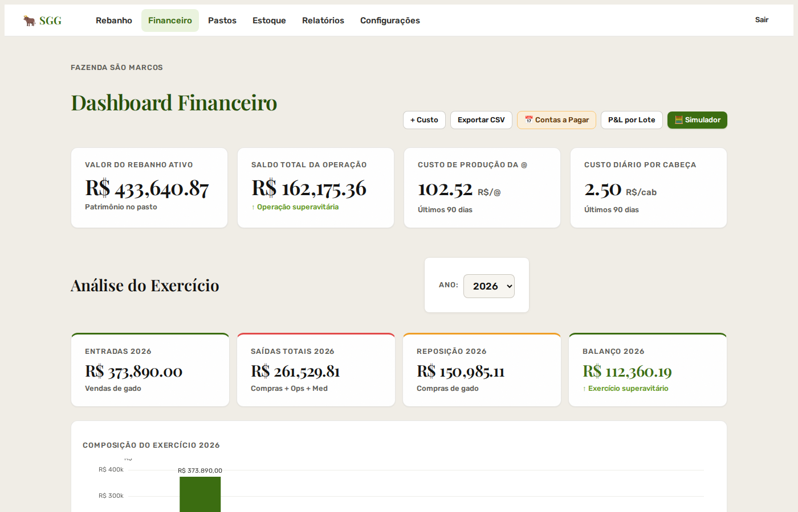
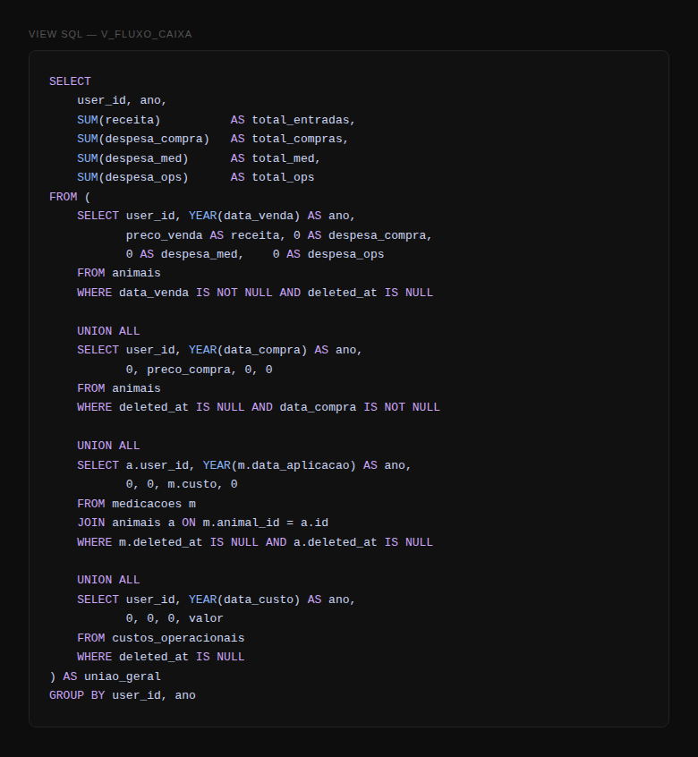
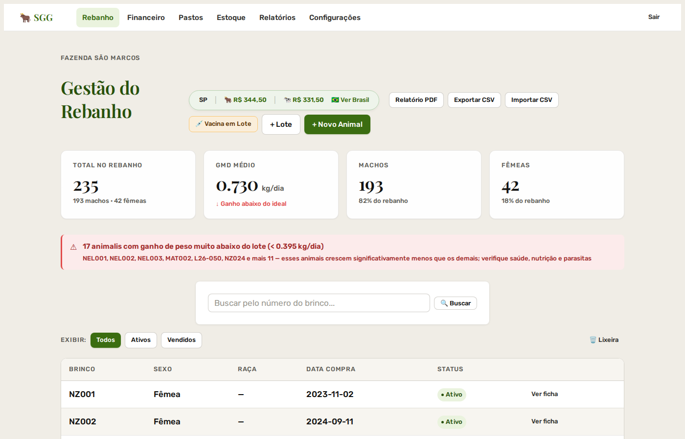
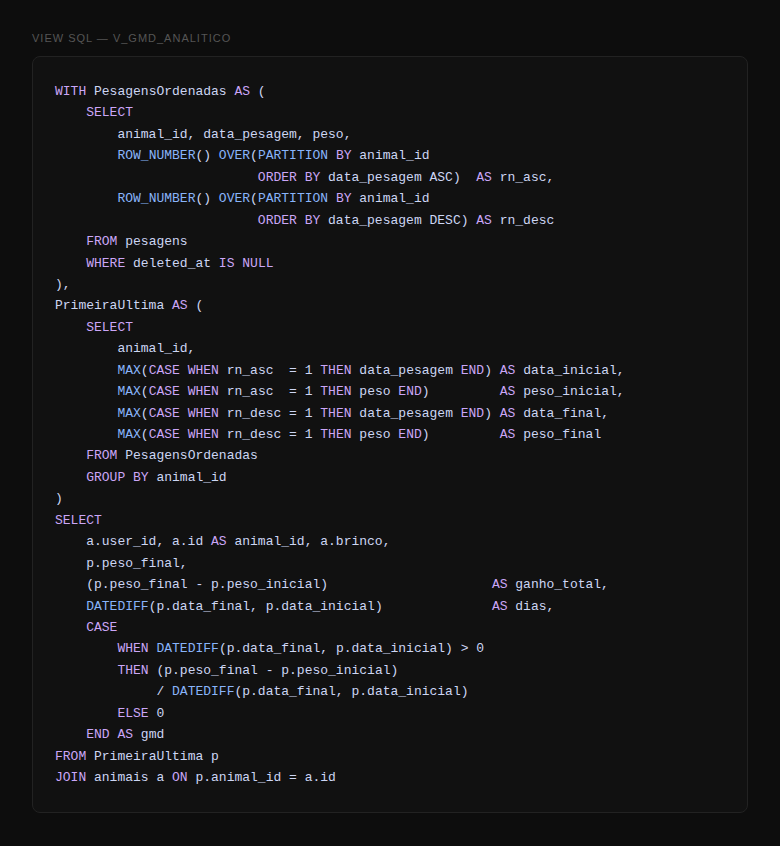
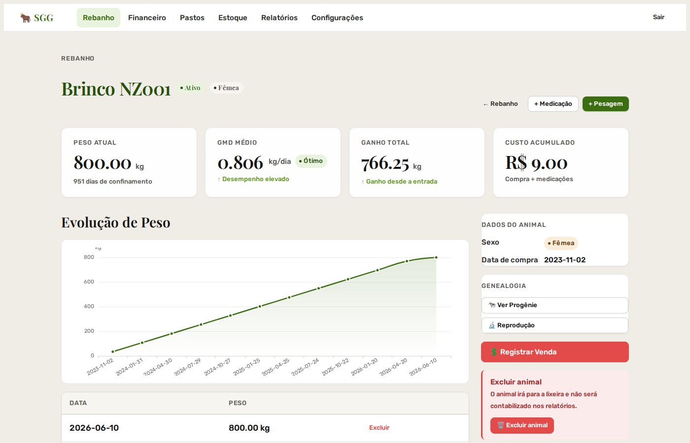

Sistema de Gestão de Gado (SGG)
ERP Zootécnico com arquitetura Database-First
O Problema
Produtores rurais tomam decisões sobre animais que valem milhares de reais com base em planilhas desconexas ou intuição. Saber o Ganho Médio Diário de um boi, cruzar isso com o custo de ração e o preço atual da arroba são operações que, sem um sistema, consomem horas e ainda geram erros.
O desafio técnico foi escala: calcular o GMD (Ganho Médio Diário) exige cruzar o histórico completo de pesagens de cada animal. Em arquiteturas convencionais, isso significa carregar milhares de registros para a memória da aplicação. Conforme o rebanho cresce, a latência cresce junto.
A Decisão de Arquitetura: Database-First
A solução foi mover a inteligência para onde os dados já estão. Em vez de trazer os dados para o Python calcular, o MySQL faz o trabalho pesado dentro do banco e entrega apenas o resultado. O Python atua como orquestrador leve, não como motor de cálculo.
Essa decisão transforma um problema de escala num problema resolvido: não importa se o rebanho tem 100 ou 10.000 animais, a consulta retorna no mesmo tempo.
1. Ecossistema Integrado
O painel financeiro não opera isolado. Ele consome cotações da arroba em tempo real via integração com o Gado-Scraper, garantindo que o valuation do rebanho acompanhe o mercado sem nenhuma entrada manual.
cron 09:00 UTC"] GS["📦 Raw URL
Gado-Scraper"] FL["🐍 Flask ERP
Blueprints"] MY["🗄️ MySQL Views
v_gmd_analitico
v_fluxo_caixa"] DB["📊 Dashboard
Browser"] GA -->|"commit diário"| GS GS -->|"HTTP GET"| FL FL -->|"query"| MY MY -->|"resultado"| DB style GA fill:#1e3a5f,stroke:#3b82f6,color:#f0f0f0 style GS fill:#1e3a5f,stroke:#3b82f6,color:#f0f0f0 style FL fill:#1e3a5f,stroke:#3b82f6,color:#f0f0f0 style MY fill:#14532d,stroke:#22c55e,color:#f0f0f0 style DB fill:#1e3a5f,stroke:#3b82f6,color:#f0f0f0
2. Views SQL como camada de lógica

Frontend: Dashboard Gerado

Backend: Abstração via Views
Em vez de loops no backend, cada cálculo complexo vive numa View SQL. A v_fluxo_caixa processa entradas e saídas diretamente no banco. O Python só busca o resultado pronto.
3. Analytics e Rebanho

Gráficos de distribuição de categorias e peso do rebanho em tempo real, utilizando índices otimizados para consultas rápidas.
4. Monitoramento Individual por Animal
O GMD exige cruzar a primeira e a última pesagem de cada animal no histórico. A v_gmd_analitico resolve isso inteiramente no banco com CTEs e window functions, entregando o indicador pronto para exibição sem nenhum processamento no Python:
WITH PesagensOrdenadas AS (
SELECT
animal_id, data_pesagem, peso,
ROW_NUMBER() OVER(PARTITION BY animal_id ORDER BY data_pesagem ASC) AS rn_asc,
ROW_NUMBER() OVER(PARTITION BY animal_id ORDER BY data_pesagem DESC) AS rn_desc
FROM pesagens
WHERE deleted_at IS NULL
),
PrimeiraUltima AS (
SELECT
animal_id,
MAX(CASE WHEN rn_asc = 1 THEN data_pesagem END) AS data_inicial,
MAX(CASE WHEN rn_asc = 1 THEN peso END) AS peso_inicial,
MAX(CASE WHEN rn_desc = 1 THEN data_pesagem END) AS data_final,
MAX(CASE WHEN rn_desc = 1 THEN peso END) AS peso_final
FROM PesagensOrdenadas
GROUP BY animal_id
)
SELECT
a.user_id, a.id AS animal_id, a.brinco,
p.peso_final,
(p.peso_final - p.peso_inicial) AS ganho_total,
DATEDIFF(p.data_final, p.data_inicial) AS dias,
CASE
WHEN DATEDIFF(p.data_final, p.data_inicial) > 0
THEN (p.peso_final - p.peso_inicial) / DATEDIFF(p.data_final, p.data_inicial)
ELSE 0
END AS gmd
FROM PrimeiraUltima p
JOIN animais a ON p.animal_id = a.id
Backend: Lógica na View

Frontend: Dados Zootécnicos
5. Repository Pattern
O Blueprint de rotas nunca toca no banco diretamente. Toda query passa por um repositório com interface bem definida — o que torna a troca de banco (ex.: SQLite → MySQL → TimescaleDB) cirúrgica, sem tocar em nenhuma rota:
# repositories/animal_repository.py
class AnimalRepository:
def __init__(self, db_connection):
self.db = db_connection
def get_by_user(self, user_id: int) -> list[dict]:
query = "SELECT * FROM animais WHERE user_id = %s AND deleted_at IS NULL"
return self.db.execute(query, (user_id,)).fetchall()
def get_with_gmd(self, user_id: int) -> list[dict]:
query = "SELECT * FROM v_gmd_analitico WHERE user_id = %s"
return self.db.execute(query, (user_id,)).fetchall()
# routes/rebanho.py — a rota nunca sabe de SQL
@rebanho_bp.route('/rebanho')
@login_required
def listar():
animais = animal_repo.get_with_gmd(current_user.id)
return render_template('rebanho.html', animais=animais)Status
Sistema em produção ativa em sistemadogado.up.railway.app (Railway + Gunicorn). Suite de testes cobre auth, CRUD operacional, financeiro, estoque, pastos, reprodução e isolamento multi-tenant.
Destaque de segurança: test_tenant_isolation.py verifica em nível HTTP — com dois usuários reais autenticados via sessão — que nenhum token, animal ou dado financeiro de um usuário é acessível a outro. Falha explícita se qualquer rota retornar dados cruzados.
O que eu faria diferente
O padrão Git-como-banco-de-dados no Gado-Scraper funciona bem para cotações diárias, mas quebraria sob volume maior. Se precisasse escalar o histórico de pesagens para dezenas de milhares de animais com séries temporais densas, substituiria as Views SQL de janela por um time-series store como TimescaleDB — queries de GMD seriam significativamente mais rápidas com compressão nativa de séries temporais. O Repository Pattern atual tornaria essa migração cirúrgica: só os arquivos em repositories/ mudariam, sem tocar em nenhuma rota.
Ver Sistema ao Vivo Ver Código no GitHub